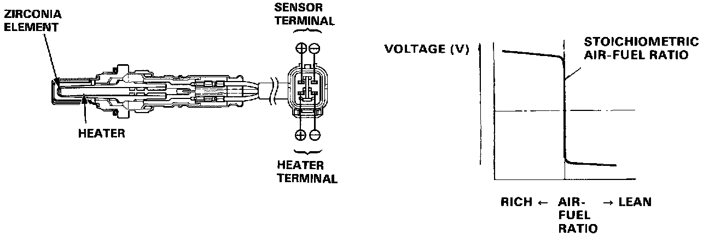

DTC 1

Self-diagnosis Check Engine light indicates code 1: A problem in the Front Oxygen (O2) Sensor circuit.
The oxygen sensors, detect the oxygen content in the exhaust gas, and input the ECU. In operation, the ECU receives the signals from the sensors and varies the duration during which fuel is injected. The oxygen sensors are combined with heaters. The heaters stabilize the sensors output. The oxygen sensors are installed in the exhaust manifolds.